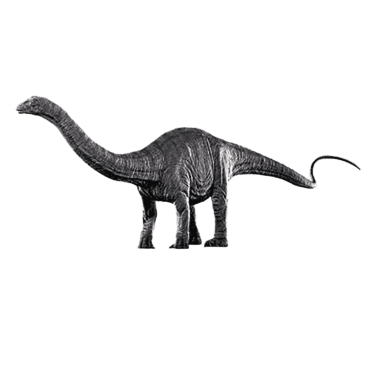
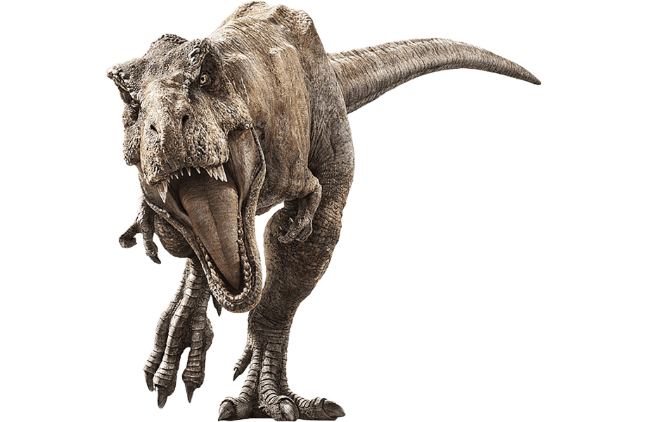

Inicio De los Dinosaurios: Hace 252 millones de años.
historia de los dinosaurios comienza al inicio de la Era Mesozoica, durante el Triásico, hace aproximadamente 252 millones de años. Este período sucedió a la extinción masiva del Pérmico, el evento de extinción más grande en la historia del planeta, que acabó con el 90% de las especies marinas y el 70% de las terrestres.
Con la Tierra en recuperación, aparecieron los primeros dinosaurios hace unos 230 millones de años. Eran pequeños, bípedos y rápidos, como el Eoraptor y el Herrerasaurus. Durante este tiempo, el supercontinente Pangea todavía estaba unido, lo que permitió que los dinosaurios se dispersaran por todo el planeta. El clima era cálido y seco, favoreciendo la expansión de reptiles y plantas resistentes.
Los primeros dinosaurios no eran los enormes y temibles animales que solemos imaginar hoy. En realidad, los primeros dinosaurios eran bastante pequeños, probablemente más parecidos a grandes lagartos o aves primitivas, con cuerpos ligeros y patas que les permitían moverse rápidamente. Se cree que los primeros dinosaurios evolucionaron a partir de un grupo de reptiles más antiguos llamados arcosaurios, que también incluían a los cocodrilos y algunos otros grupos de reptiles.
Entre estos primeros dinosaurios, había tanto carnívoros como herbívoros. Un ejemplo temprano de dinosaurio carnívoro es el Eoraptor, que caminaba en dos patas y se alimentaba de pequeños animales, mientras que algunos herbívoros como el Plateosaurus ya empezaban a caminar sobre cuatro patas y a alimentar a grandes cantidades de vegetación. Estos animales eran de tamaño moderado, y su capacidad para caminar erguidos sobre sus patas traseras les dio una ventaja significativa frente a otros reptiles.
Quieres ver el Final?


Redes Sociales